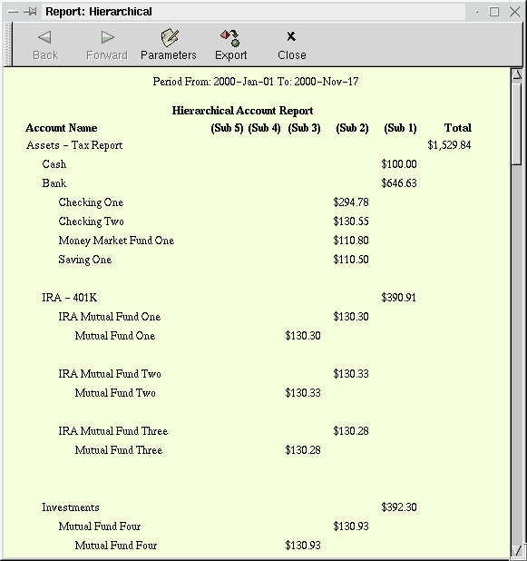
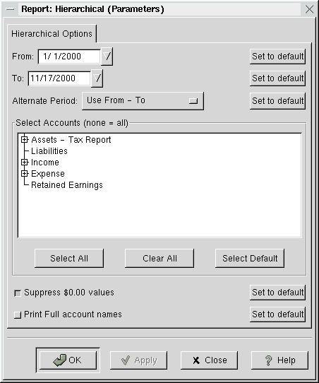

Hierarchical Accounts Report

This report allows you to view all accounts in a hierarchical
fashion. Up to fifteen sub-accounts are displayed. Lower
sub-accounts are ignored. (the source file is scm/report/taxtxf.scm)

Parameters for this report include:
- The start and end dates - default: Year-to-Date.
- Alternate Period: (Year is relative to From:)
- Use From - To (default)
- 1st, 2nd, 3rd, 4th Estimated Tax Quarters (From: year)
- Last Year (year before From: year)
- 1st, 2nd, 3rd, 4th Estimated Tax Quarters for Last Year
- The accounts for which the report is to be produced. If no
account is selected, all accounts are displayed.
- Suppress $0.00 values
- Display Full account names
Return to Main Documentation Page.